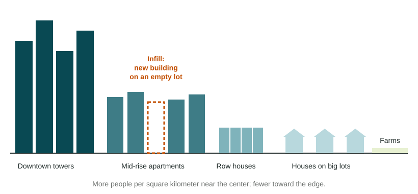

Two cities can hold the same number of people on very different amounts of land. Some build up, others spread out, and the same block can be crowded in one decade and empty in the next. This topic explains why.
Residential density
Residential density is the number of housing units, or people, on a given area of land, such as homes per hectare. High-density housing means apartment buildings and row houses packed close together. Low-density housing means detached houses, each on its own lot with a yard.

In most cities, residential density falls with distance from the CBD. Bid-rent explains why: land near the center costs the most, so builders fit more homes on each lot. The pattern differs in strength. At the regional scale, many older European cities, such as Paris, stay dense far from the center, with blocks of six- and seven-story apartment buildings. Many US metro areas, such as Houston, drop to low density only a few kilometers out.
Housing reflects culture
What people think a good home looks like shapes how a city is built. In the old medina of Fez, Morocco, houses face inward onto private courtyards, with plain outer walls, which fits a culture that values family privacy. In Beijing, the traditional siheyuan is a courtyard home shared by an extended family. In many US suburbs, the ideal has long been a single-family house with a lawn, a garage and space between neighbors. In Hong Kong, a shortage of flat land and a long history of public housing towers have made apartment living normal for most families.
Housing reflects technology
Technology sets the limits on how cities can be built. Before about 1880, most city buildings were five or six stories high, because people had to climb stairs. Steel frames and safe passenger elevators, first used widely in New York and Chicago in the late 1800s, made tall office towers and apartment blocks possible, so density near the center rose. Streetcars let people live a few kilometers from work, so "streetcar suburbs" grew along the lines. Cars and highways let people live much farther out, on cheaper land, so density at the edge fell.
Zoning
Zoning is a set of local laws that divides a city into areas, or zones, and says what may be built in each: homes, stores, offices or factories, and how tall or dense. The US Supreme Court upheld zoning in 1926 (Village of Euclid v. Ambler Realty), and most US cities use it. Zoning keeps a noisy factory away from homes, but it also shapes density for decades. In many US cities, most land zoned for homes allows only one detached house per lot, so apartments cannot be built there even if people want them. Houston is a well-known exception: it has no citywide zoning code, so a house, a store and an apartment block can stand on the same street, although private deed rules still limit some neighborhoods.
Cycles of development and infilling
Every neighborhood goes through cycles of development: land is built on, buildings age, an area may decline as jobs or residents leave, and later it may be rebuilt. Detroit shows a full cycle at the local scale. Its population, about 1.85 million in the 1950 US census, fell to about 640,000 by the 2020 census as factory jobs left and families moved to the suburbs. Tens of thousands of houses were abandoned and torn down, and some blocks became fields.
Infilling is building new homes or businesses on vacant or underused lots inside an area that is already built up, instead of on open land at the edge. It raises residential density and uses roads, pipes and transit lines that are already there. In the 2010s, Washington, D.C., added many apartment buildings on empty lots and parking lots near downtown. Infill can bring new homes and shops, but neighbors sometimes worry about traffic, taller buildings next to small houses and rising rents.
| Force | How it shapes housing and land use | Example |
|---|---|---|
| Culture | Ideas of a good home set its form | Courtyard houses in Fez; suburban lawns in the United States |
| Technology | Elevators raise density; cars lower it at the edge | Chicago towers; car-era suburbs |
| Zoning | Laws fix what can be built where | Single-house zones in many US cities; no zoning code in Houston |
| Cycles of development | Building, decline and rebuilding | Detroit's empty blocks; infill in Washington, D.C. |